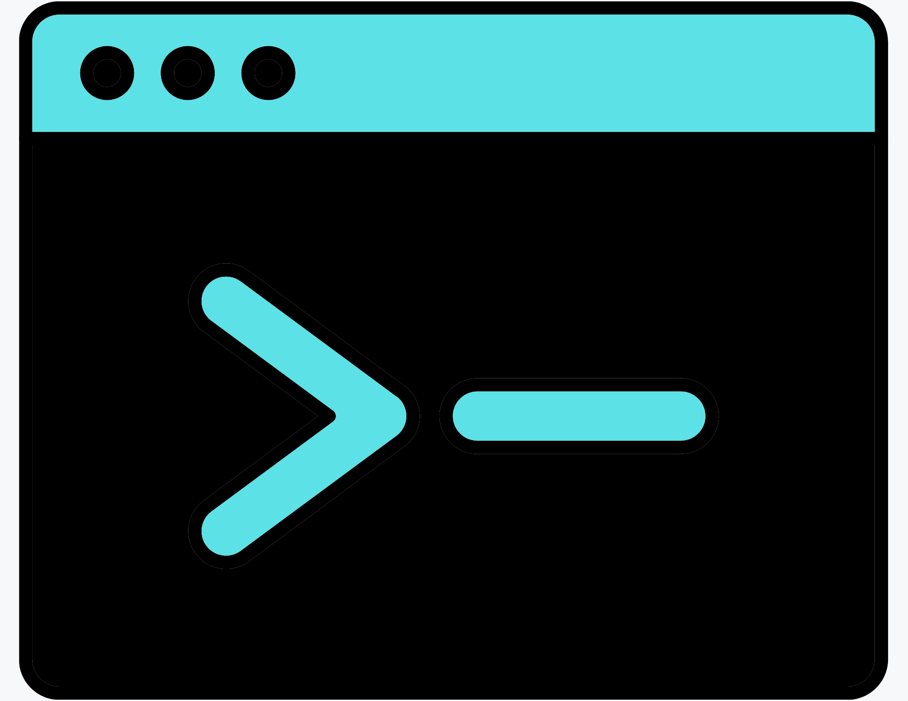

The Digital Collection Automation Toolkit is a community resource for library and archives professionals working with digital collections, digital archives, or digital repositories. Right now, the toolkit focuses on one-line commands but is in active development to include Python scripts and R workflows for file management, metadata processing, and digital preservation. Feedback is welcome! Contact me at michelle.shannon@unlv.edu.
Other fantastic resources include:
Warning: Right now, this toolkit is intended to be a quick reference guide, not a tutorial for how to use the command line. If you're new to the command line, I encourage you to learn more before jumping in. There is no "undo" command--if you accidentally delete, modify, or otherwise make unwanted change to files, you may find yourself up a creek without a paddle. Digital Preservation Outreach & Education Network (DPOE-N) is a great place to start!